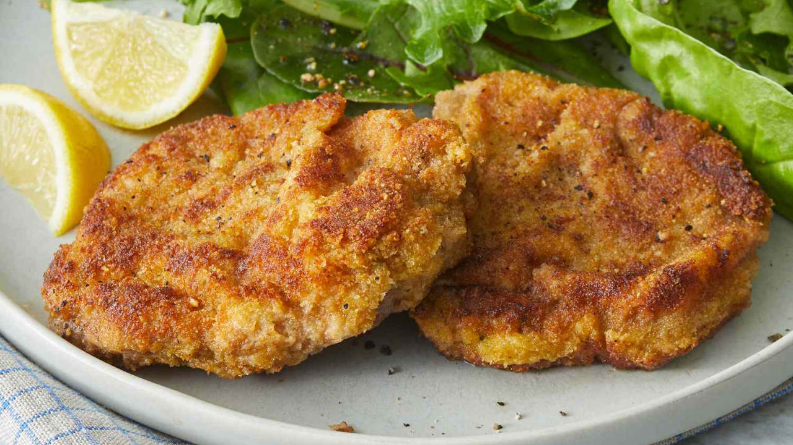

Wiener Schnitzel

Description
Wiener schnitzel is a German dish of thin veal cutlets that are breaded and pan-fried. It's one of the national dishes of Austria.
This wiener schnitzel is an easy German recipe and one of our favorites. Boneless pork chops can also be substituted for veal and taste excellent!
This authentic wiener schnitzel recipe is wonderfully flavorful and irresistibly crispy.
Ingredients:
- 1,5 pounds veal cutlets
- 0,5 cup all-purpose flour
- 2 large eggs
- 3 tablespoons grated Parmesan cheese
- 2 tablespoons milk
- 1 teaspoon minced parsley
- 0,5 teaspoon salt
- 0,25 teaspoon pepper
- 1 pinch ground nutmeg
- 1 cup dry bread crumbs
- 6 tablespoons butter
- 4 slices lemon
Steps:
- Place veal cutlets between 2 sheets of heavy plastic on a solid, level surface. Firmly pound cutlets with the smooth side of a meat mallet to a 1/4-inch thickness. Dip cutlets in flour to coat; shake off excess.
- Beat eggs, Parmesan cheese, milk, parsley, salt, pepper, and nutmeg together in a shallow bowl until combined. Place bread crumbs on a plate.
- Dip each cutlet into the egg mixture, then press in bread crumbs to coat. Place coated cutlets on a plate and refrigerate for 1 hour to overnight.
- Melt butter in a large skillet over medium heat. Cook breaded cutlets in butter until browned, about 3 minutes per side. Transfer cutlets to a serving platter and pour pan juices over them. Garnish with lemon slices.